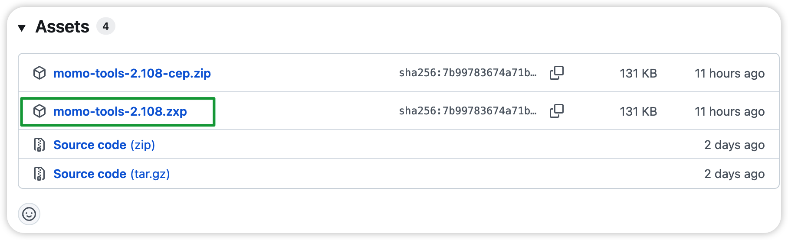
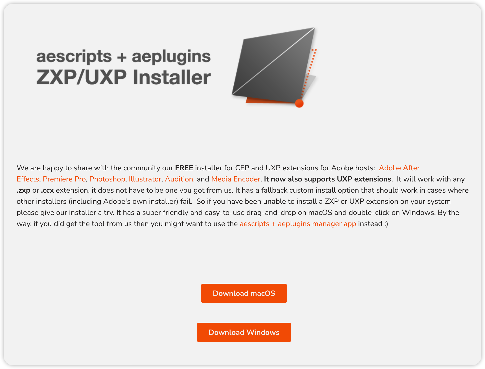
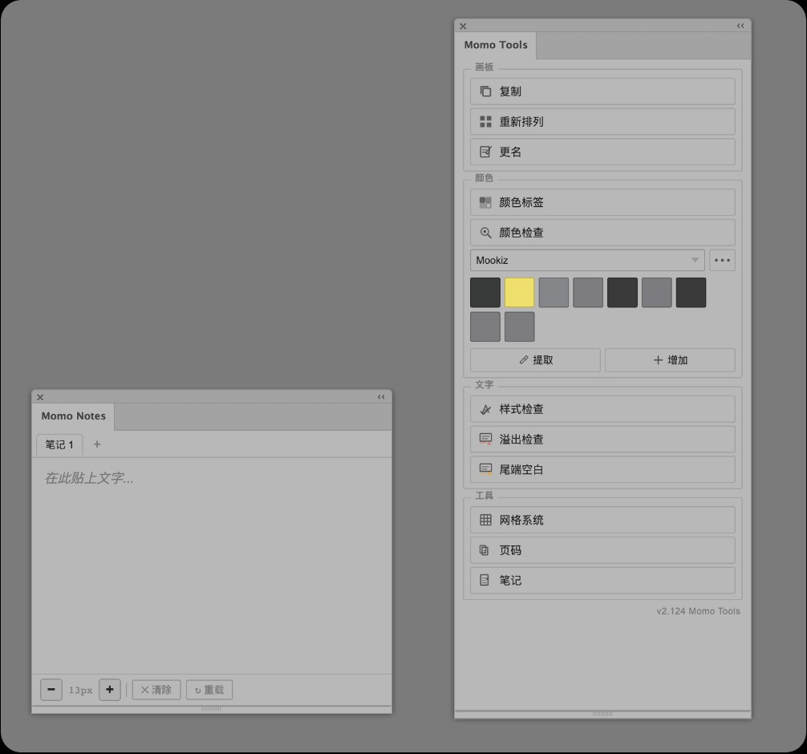

Momo Tools 使用指南
Adobe Illustrator 外掛面板 v2.147 — 畫板、顏色、文字、排版工具集 · 2026-07-26
Momo Tools 是一套 Illustrator 小工具集，幫你在一個面板裡完成那些 AI 原生功能做不到、或做起來很慢的事：批次複製畫板（帶著內容一起）、一鍵檢查全檔案的文字溢位、清點文件用色、管理品牌色庫、生成排版網格、自動加頁碼。
沒有彈窗、不用記快捷鍵。安裝完成後見下方快速上手，再按功能分組瞭解每個按鈕。
安裝與啟動
任選下面一種安裝方式即可（不必兩種都做）。安裝完成後均需完全退出並重啟 Illustrator。
安裝方法
【方法一：ZXP 檔案安裝】
適合不熟悉複製資料夾路徑的使用者。macOS 與 Windows 步驟相同。
- 從 GitHub Releases 下載
.zxp檔案

momo-tools-x.xx.zxp
- 開啟 ZXP Installer，將
.zxp檔案拖入視窗完成安裝
- 完全退出並重啟 Illustrator
- 選單開啟 Momo Tools（macOS：
視窗 → 擴充套件功能；Windows：Window → Extensions）
【方法二：手動安裝（CEP 資料夾）】
從 GitHub Releases 下載 momo-tools-*-cep.zip 並解壓，得到 com.tomideas.illustratortools 資料夾（名稱須保持此樣）。再按系統展開下方步驟操作。
此方法步驟較多，日常安裝建議優先使用 方法一 ZXP。需要手動部署時再展開對應系統。
🍎 macOS 安裝步驟
1. 建立擴充套件目錄（首次安裝必做）
macOS 通常沒有現成的 CEP 資料夾，需自行建立：
mkdir -p ~/Library/Application\ Support/Adobe/CEP/extensions open ~/Library/Application\ Support/Adobe/CEP/extensions
目標路徑（Finder 中「前往資料夾」可貼上）：
~/Library/Application Support/Adobe/CEP/extensions/
完整示例（把 你的使用者名稱 換成實際使用者名稱）：
/Users/你的使用者名稱/Library/Application Support/Adobe/CEP/extensions/
2. 放入擴充套件資料夾
將解壓得到的 com.tomideas.illustratortools 拖入上一步開啟的 extensions 資料夾。
最終應存在：
.../CEP/extensions/com.tomideas.illustratortools/
3. 啟用未簽名擴充套件（首次必做）
Momo Tools 為開發版 CEP 擴充套件，須開啟 PlayerDebugMode。請先完全退出 Illustrator，再開啟「終端」執行：
defaults write com.adobe.CSXS.11 PlayerDebugMode 1 defaults write com.adobe.CSXS.12 PlayerDebugMode 1
Adobe 官方相容表顯示：Illustrator 25.3 整合 CEP 11，Illustrator 29.5.1 開始整合 CEP 12。兩條都執行可相容不同 Illustrator 版本；外掛清單裡的 RequiredRuntime 6.0 只是最低要求，不是這裡的 CSXS 鍵版本。
4. 啟動面板
- 完全退出並重新開啟 Adobe Illustrator
- 選單欄：視窗 → 擴充套件功能 → Momo Tools（部分版本為 視窗 → 擴充套件）
- 筆記面板：視窗 → 擴充套件功能 → Momo Notes，或主面板「筆記」按鈕
面板底部顯示版本號即表示載入成功。
5. 解除安裝（macOS）
刪除以下資料夾後重啟 Illustrator：
~/Library/Application Support/Adobe/CEP/extensions/com.tomideas.illustratortools
顏色庫在 ~/Library/Application Support/MomoTools/，筆記在面板儲存中，解除安裝擴充套件不會刪除它們。
🪟 Windows 安裝步驟
1. 建立擴充套件目錄（首次安裝必做）
Windows 通常沒有現成的 CEP 資料夾，需自行建立。任選一種方式：
方式 A — 資源管理器
- 開啟資源管理器，位址列輸入
%APPDATA%回車 - 若無
Adobe資料夾則新建 - 在
Adobe下新建CEP，再在CEP下新建extensions
方式 B — 命令提示符
mkdir "%APPDATA%\Adobe\CEP\extensions" explorer "%APPDATA%\Adobe\CEP\extensions"
目標路徑：
%APPDATA%\Adobe\CEP\extensions\
完整示例：
C:\Users\你的使用者名稱\AppData\Roaming\Adobe\CEP\extensions\
2. 放入擴充套件資料夾
將解壓得到的 com.tomideas.illustratortools 資料夾複製到 extensions 內。
最終應存在：
...\Adobe\CEP\extensions\com.tomideas.illustratortools\
3. 啟用未簽名擴充套件（首次必做）
請先完全退出 Illustrator，開啟「命令提示符」執行：
reg add "HKCU\Software\Adobe\CSXS.11" /v PlayerDebugMode /t REG_SZ /d 1 /f reg add "HKCU\Software\Adobe\CSXS.12" /v PlayerDebugMode /t REG_SZ /d 1 /f
Adobe 官方相容表顯示：Illustrator 25.3 整合 CEP 11，Illustrator 29.5.1 開始整合 CEP 12。兩條都執行可相容不同 Illustrator 版本；/f 會直接覆蓋舊值，避免命令停在確認提示。
執行後可檢查是否寫入成功：
reg query "HKCU\Software\Adobe\CSXS.11" /v PlayerDebugMode reg query "HKCU\Software\Adobe\CSXS.12" /v PlayerDebugMode
輸出應顯示型別為 REG_SZ、數值為 1。
4. 啟動面板
- 完全退出並重新開啟 Adobe Illustrator
- 選單欄：Window → Extensions → Momo Tools
- 筆記面板：Window → Extensions → Momo Notes，或主面板「筆記」按鈕
面板底部顯示版本號即表示載入成功。
5. 解除安裝（Windows）
刪除以下資料夾後重啟 Illustrator：
%APPDATA%\Adobe\CEP\extensions\com.tomideas.illustratortools
顏色庫在 %APPDATA%\MomoTools\，筆記在面板儲存中，解除安裝擴充套件不會刪除它們。
快速上手
主面板按工作流分為四組：畫板（複製、排列、更名）、顏色（標籤、檢查、色庫）、文字（樣式 / 溢位 / 尾端空白檢查）、工具（網格、頁碼、筆記）。點按鈕即執行，有引數時會在彈窗中確認；結果在 Illustrator 視窗底部短暫提示。

上圖右為主工作面板，自上而下對應下方四組按鈕；左為 Momo Notes，用於暫存文案、貼參考文字，與主面板獨立。需要記筆記時可點主面板「筆記」，或從選單單獨開啟 Momo Notes，兩個面板可拖放並排使用。主題自動跟隨 Illustrator 深淺色，無需額外設定。各組功能細節見下表，點選連結跳轉到對應章節。
| 分組 | 按鈕 | 詳情 |
|---|---|---|
| 畫板 | 複製 · 重新排列 · 更名 | 畫板工具 |
| 顏色 | 顏色標籤 · 顏色檢查 · 顏色庫 · 選取相同工具 | 顏色工具 |
| 文字 | 樣式檢查 · 溢位檢查 · 尾端空白 | 文字工具 |
| 工具 | 網格系統 · 批次頁碼 · 筆記 | 工具集 · 筆記面板 |
畫板工具
複製畫板
複製選中的畫板及其所有內容。這是 Momo Tools 與 AI 原生「複製畫板」的關鍵區別——後者不攜帶內容。
操作步驟
- 在 AI 中選中畫板（Shift 多選或用畫板面板）
- 點選「複製畫板」按鈕
- 設定引數後點「確定」
引數說明
| 重新命名複製的畫板 | 勾選後啟用查詢/替換命名。例：查 FR_ 替 EN_ → FR_01 變成 EN_01 |
| 左右/上下間距 | 複製出的畫板與原始畫板的淨距（pt）。預設自動檢測 |
| 整體位移 X/Y | 對整個複製結果做額外偏移。負值向左/上移動 |
無選中畫板時按鈕自動置灰，無需記憶。
重新排列
將全部畫板按網格重新排列。不會修改畫板內部內容位置。
操作步驟
- 在對話方塊列表中勾選要排列的畫板（或輸入範圍如
1-10） - 設定每行個數與左右 / 上下間距
- 選擇放置位置後點「確定」
引數說明
| 每行個數 | 逗號分隔，如 3,3,2 = 第一行 3 個、第二行 3 個、第三行 2 個。也可填單個數字表示每行固定數量 |
| 左右/上下間距 | 畫板之間的淨距，單位跟隨當前文件 |
| 放置位置 | 選區左上 / 某畫板正下方（可設偏移量） |
| 畫板列表 | 顯示全部畫板，也可用範圍輸入（如 1-594）選取 |
畫板更名
4 種命名模式，互斥單選。適合批次改名或單個改名場景。
操作步驟
- 點選「畫板更名」按鈕
- 在列表中多選畫板，或輸入範圍（如
1-5, 8） - 選擇命名模式（模板 / 替換 / 逐行 / 字尾），填寫引數後點「確定」
引數說明
| 模板 | 用 {n} 表示序號、{name} 表示原名。例：頁_{n} → 頁_01, 頁_02… 可設起始值和步長 |
| 替換 | 查詢原名中的文字 → 替換為新文字。支援正規表示式 |
| 逐行 | 在文字框中逐行輸入新名稱，一行對應一個畫板。空行保留原名 |
| 字尾 | 在原名末尾統一追加固定文字。例：字尾 _v2 → FR_01_v2 |
列表支援多選（Ctrl / Shift），可僅對選中畫板改名。列表上方的輸入框支援範圍語法，如 1-5, 8。
顏色工具
顏色標籤生成
從選中物件提取填色，自動生成帶色值說明的色塊標籤。支援多選、同色去重，常用於包裝稿顏色標註或給印刷廠的色值指示圖。
操作步驟
- 在 AI 中選中一個或多個物件（群組會遞迴提取內部填色）
- 點選「顏色標籤」按鈕
- 確認檢測到的顏色列表，設定尺寸與位置後點「生成」
引數說明
| 色塊尺寸 | 寬 / 高（pt），預設 20×20 |
| 字型大小 | 色值文字字號（pt） |
| 文字顏色 | 黑色 K100 / 白色 K0 |
| 排列方向 | 橫排 → 或縱排 ↓（文字在色塊上方或右側） |
| 色塊位置 | 畫板右 / 下 / 左 / 外側，或各物件右側 |
| 間距 | 色塊之間及距畫板的淨距（pt） |
標籤寫入圖層「顏色標籤」；CMYK 檔案顯示 CMYK 值，RGB / 專色 / 灰色也會按型別標註。再次生成會接續排在同側已有標籤之後。
顏色檢查
清點指定畫板內的用色：給每個物件標彩色編號，可選紅框標出出現次數過少的稀有色。勾選「生成說明」會在首畫板上方輸出顏色彙總圖例。
操作步驟
- 點選「顏色檢查」按鈕
- 設定畫板範圍與檢查型別（文字 / 形狀 / 描邊）
- 確認輸出選項後點「檢查」
引數說明
| 畫板範圍 | all 全部；1-10；1,3,5 指定畫板 |
| 檢查型別 | 文字填色、形狀填色、描邊色，至少勾選一種 |
| 只檢查可見物件 | 跳過隱藏圖層 |
| 紅框標出 ≤ N 次 | 預設 N=1，標出稀有色；關閉則只標編號 |
| 生成說明 | 首畫板上方輸出圖例，編號顏色與畫板標註一致 |
| 刪除舊標註圖層 | 清除上次的「顏色編號」「單次顏色標註」「顏色說明」 |
填色稀有色為紅框，描邊稀有色為橙框。只標記不改色；漸變、圖案填色不統計。
顏色庫
在面板內管理品牌標準色，跨檔案、重啟 Illustrator 後仍可用。點選色塊即可填到當前選中物件（群組內物件也會填）。
操作步驟
- 點分組旁的 + 新建分組（如「包裝色」「Meeting Pro」）
- 錄入顏色：雙擊空白處手動輸入，或選中物件（含群組、複合路徑）後點「提取」——用選擇工具（V）直接選中即可
- 在 AI 中選中要填色的物件，點選色塊應用
面板功能
| 編輯 / 刪除 | 懸停色塊 → ✎ 進入編輯器；刪除在編輯器內紅色按鈕 |
| 拖拽排序 | 拖拽色塊調整順序 |
| 分組管理 | 點選分組名可改名；「•••」可按名稱升序 / 降序排列分組 |
| CMYK / HEX | 以 CMYK 為準，兩邊互算同步。只改 HEX 未同步 CMYK 可能導致重啟後顏色變白 |
備份與匯入
| 匯出庫 | 「•••」→ 匯出全部 JSON，含所有分組 |
| 匯出當前分組 | 「•••」→ 僅匯出當前分組，便於分享給團隊 |
| 匯入庫 | 「•••」→ 覆蓋整個顏色庫 |
| 匯入到當前分組 | 「•••」→ 僅追加到當前分組 |
資料儲存在 ~/Library/Application Support/MomoTools/color_library.json（macOS）或 %APPDATA%\MomoTools\（Windows）；檔案寫入失敗時會暫存面板 localStorage。建議定期匯出 JSON 備份。
選取相同工具（Illustrator「選擇相同」）
快速選中當前檔案裡顏色相同的物件，不必逐層展開群組，也不用反覆開啟 Illustrator 的「選擇 → 相同」選單。功能直接呼叫 Illustrator 原生命令，對群組、複合路徑、專色與外觀的判斷規則與 Illustrator 保持一致。
兩種使用方式
| 以畫布物件為參考 | 先選中一個物件，再點「填充顏色」「描邊色」或「填色和描邊」。適合從稿件中的現有物件開始查詢 |
| 以顏色庫色塊為參考 | 先點選顏色庫色塊，色塊出現高亮邊框；再點「填充顏色」或「描邊色」。選擇完成後參考色會自動清除 |
按鈕說明
| 填充顏色 | 選擇填充顏色相同的物件 |
| 描邊色 | 選擇描邊顏色相同的物件 |
| 填色和描邊 | 同時比較物件的填色與描邊；必須先在畫布選中參考物件 |
顏色庫色塊只能提供一種顏色，因此只用於「填充顏色」或「描邊色」；「填色和描邊」仍以畫布所選物件為參考。所有選擇都只發生在當前 Illustrator 檔案中，不會修改物件顏色。
文字工具
三個文字工具建議按順序使用：樣式檢查 → 溢位檢查 → 尾端空白檢查。
文字樣式檢查
按字號 / 字型 / 顏色將文字分組並編號，可選紅框標出出現次數過少的樣式組，或檢測框內混合樣式。勾選「生成說明」會在首畫板上方輸出樣式彙總圖例；完整清單以畫板標註與圖例為準，不再彈出詳細報告視窗。
操作步驟
- 點選「樣式檢查」按鈕
- 選定畫板範圍（列表多選，或輸入
all、1-10等）；畫板很多時可用「延續」分段檢查、接續編號 - 勾選分組維度與輸出選項後點「檢查」
引數說明
| 畫板範圍 | 列表多選，或輸入 all、1-10、1,3,5 |
| 全新 / 延續 | 大檔案分段檢查時用「延續」接續上次編號 |
| 分組維度 | 字號、字型、顏色，至少勾選一種（決定哪些屬性相同才算「同一組」） |
| 框內混合檢查 | 同一文字框內一行出現多種樣式時標紅框 |
| 只檢查可見物件 | 跳過隱藏圖層 |
| 包含畫板外文字 | 納入畫板範圍外的遊離文字 |
| 紅框標出 ≤ N 次的樣式 | 預設 N=1，標出少見樣式組；關閉則只標編號 |
| 生成說明 | 首畫板上方輸出圖例，與畫板編號對應 |
文字溢位檢查
檢測區域文字（Area Text）是否有內容超出文字框——即 AI 右下角的紅色「＋」號。這是印前最常見的排版事故。
操作步驟
- 在對話方塊中選擇要檢查的畫板（勾選列表或輸入
1-5, 8） - 點選「溢位檢查」執行
- 有溢位的文字框會被紅框標記，按標記位置逐一修正
檢測規則
| M4a 字元溢位 | 文字內容的字元數超過了總行數所能容納的量（垂直溢位）。適用於多行區域文字。 |
| M8 水平溢位 | 將文字框轉為點文字後內容變短了（水平溢位）。適用於單行/窄框文字。 |
| M12 段高溢位 | 段落的總高度（段落數 × 行距）超出了文字框高度（尾端空段溢位）。 |
僅檢查區域文字（Area Text）。點文字不會溢位，不檢查。尾端僅 Enter/空格導致的紅色「+」目前不支援可靠檢測。
尾端空白檢查
檢測區域文字末尾的多餘空格、製表符（Tab）、空段落。這些內容肉眼不可見，但在排版中會導致對齊異常或匯出問題。
操作步驟
- 選擇要檢查的畫板範圍
- 點選「尾端空白」執行
- 有問題處以橙框標出，按標記位置清理
檢查內容
| 末尾空格 | 段落末尾的空格字元 |
| 末尾 Tab | 段落末尾的製表符（\t） |
| 空段落 | 由連續回車產生的空白段落 |
問題已被標出來（橙框），你一眼就能看到。AI 在段落末尾會自動加一個看不見的段落標記，Momo Tools 不會把這個誤判成「空段落」。
工具集
網格系統
一鍵在畫板上繪製設計網格參考線。原創作者：火山字型 canfei (hstype.com)。
操作步驟
- 點選「網格系統」按鈕開啟對話方塊
- 選擇網格型別和引數
- 點「預覽」檢視效果（生成到
_網格預覽圖層） - 滿意後點「應用」，或點「轉為參考線」轉為 AI 原生參考線
- 不滿意點「取消」——預覽會自動清除
網格型別
| 瑞士網格 | 經典平面設計網格。引數：列數、行數、間距。適合：書籍、畫冊、品牌物料排版 |
| 等分網格 | N 等分畫板，支援間距和可選對角線。引數：分割數。適合：海報、封面、等分佈局 |
| 黃金比例 | 基於斐波那契數列的黃金分割。引數：斐波那契項數、雙軸/單軸、可選對角線。適合：攝影構圖、視覺焦點安排 |
共用引數
| 作用範圍 | 當前畫板 / 選中的圖形 / 全部畫板 |
| 設定記憶 | 重新開啟時恢復網格型別、全部引數、單位、內邊距、顏色、作用範圍和匯出選項 |
| 剪下蒙版 | 選擇剪下蒙版群組時，以蒙版路徑的幾何邊界生成網格，不使用蒙版外的隱藏內容邊界 |
| 生成結構 | 每個目標的列、行、邊框與對角線合併在一個頂層組中，可一次選擇並整體移動 |
| 單位 | px / mm / pt，自動按文件單位轉換 |
| 內邊距 | 上/下/左/右 4 邊獨立，可一鍵全部同步 |
| 網格線顏色 | 6 種淺色圓形色塊點選（淺藍 / 淺綠 / 淺紅 / 淺黃 / 淺灰 / 淺橙），選中顯示藍色高亮環 |
| 間距預設值 | 瑞士網格「列數」間距預設開啟；「行數」間距與等分網格間距預設關閉（可手動勾選） |
| 保留上次網格 | 勾選後，再次生成網格不會清除上次的線，而是疊加在上面。方便同時使用多種網格（如瑞士網格+黃金比例） |
| 間距開關 | 列數、行數、等分網格各有一個獨立的「間距」核取方塊。取消勾選則對應間距強制為 0（無間距排列）。三個核取方塊獨立，樣式一致 |
預覽不會覆蓋你已有的設計內容。如果已有同名圖層，會先清空再重建。
批次頁碼
自動在多個畫板上新增頁碼。適合多頁畫冊、提案檔案、產品型錄。
操作步驟
- 點選「頁碼」按鈕
- 選擇要編號的畫板
- 設定位置（9 宮格）、起始頁碼與格式後確認
引數說明
| 頁碼位置 | 9 個方位，對應數字鍵盤 1-9（底部左/中/右、中部左/中/右、頂部左/中/右） |
| 起始頁碼 | 從第幾頁開始編號（預設 1） |
| 格式 | 自定義字首/字尾，如 第{n}頁、Page {n} |
筆記面板 (Momo Notes)
獨立 CEP 面板，在 Illustrator 內記錄專案備註——不切換應用、不離開工作區。
操作步驟
- 主面板點「筆記」，或選單
視窗 → 擴充套件功能 → Momo Notes - 點 + 新建標籤頁，點選標籤名可重新命名
- 在編輯區輸入備註；底部可調整字號、清除或過載
功能一覽
| 多標籤 | 最多 10 個標籤頁，按專案或主題分離筆記 |
| 拖拽排序 | 拖拽標籤頁重新排列 |
| 行內重新命名 | 點選標籤名即可編輯，無彈窗 |
| Markdown 表格 | 在編輯器中輸入表格文字（如 | A | B |），面板自動檢測並渲染為視覺化表格；單元格內 **粗體** 可正確顯示 |
| 撤銷 / 重做 | 支援 Cmd+Z / Cmd+Shift+Z（Windows：Ctrl+Z / Ctrl+Y），在筆記內編輯時不會被 AI 搶走快捷鍵 |
| 字號控制 | 可在 9px - 32px 之間調整字型大小 |
筆記儲存在面板瀏覽器儲存中，重啟 Illustrator 後仍在。重要內容建議複製備份。
使用技巧
印前標準檢查流程
每次交付檔案前，建議按以下順序執行 4 項檢查（約 1 分鐘完成）：
- 文字溢位檢查 — 紅框處理。這是印前最常見也最嚴重的問題
- 尾端空白檢查 — 橙框處理
- 文字樣式檢查 — 清點樣式組，標出少見樣式與框內混合樣式
- 顏色檢查 — 清點用色，標出出現次數過少的稀有色
顏色庫使用建議
- 按產品線建立分組（而非按顏色型別分類）——因為你的日常流程是「做 Meeting Pro 的物料，我需要它的標準色」，而非「我要找個藍色」
- 定期匯出 JSON 備份（「•••」→ 匯出庫）
- 跨裝置使用：匯出 → 複製 JSON → 匯入
- 編輯 CMYK 後確認 HEX 是否正確更新（反之亦然），兩者經 ICC 轉換後互算
畫板技巧
- 先 複製畫板 生成變體 → 再 畫板更名 統一命名 → 最後 重新排列 整理佈局
- 範圍輸入支援混合語法：
1-5, 8, 10-12 - 複製畫板後檢查查詢/替換是否影響非目標文字（如畫板名中的公共部分）
標註框顏色規則
| 紅框 | 文字溢位（印前阻塞） |
| 橙框 | 尾端空白 |
| 紅框（樣式檢查） | 出現次數 ≤ 閾值的樣式組、框內混合樣式 |
| 紅框 / 橙框（顏色檢查） | 填色稀有色 / 描邊稀有色（出現次數 ≤ 閾值） |
| 彩色數字 | 顏色檢查編號，顏色與首畫板圖例一一對應 |
常見問題
選單裡找不到 Momo Tools
- 確認已執行 macOS PlayerDebugMode 或 Windows PlayerDebugMode，並完全重啟 Illustrator
- 資料夾名稱必須是
com.tomideas.illustratortools（見 macOS / Windows 安裝路徑） - 部分版本選單為「擴充套件」而非「擴充套件功能」
面板打不開 / 白屏
試試這些方法：
- 重新開啟面板：選單欄 → 視窗 → 擴充套件功能 → Momo Tools
- 重啟 Illustrator
- 檢查是否裝對位置：確認
com.tomideas.illustratortools資料夾在正確的擴充套件目錄下（見上方安裝步驟）
Momo Notes 白屏或標籤頁消失
- 先關閉 Momo Notes 面板（
視窗 → 擴充套件功能，取消勾選 Momo Notes） - 完全退出並重啟 Illustrator
- 重啟後從主面板「筆記」按鈕或選單重新開啟
顏色庫資料丟了 / 重啟後變白
顏色庫有兩份存檔（見顏色庫 → 資料儲存位置）：
- 檔案：
~/Library/Application Support/MomoTools/color_library.json（macOS）或%APPDATA%\MomoTools\（Windows） - 備用：面板
localStorage
重啟後顏色變白：通常是隻改了 HEX、CMYK 未同步。請用 ✎ 編輯顏色，確認 CMYK 與 HEX 一致後儲存。建議定期「•••」→ 匯出庫 備份 JSON。
顏色庫儲存失敗？
- 若出現「已暫存本地，但寫入檔案失敗」提示，資料仍在 localStorage，但重啟 CEF 快取可能被清——請儘快匯出 JSON 備份
- 檢查對
MomoTools目錄是否有寫許可權
文字溢位檢查結果不準確
三種情況：
- 漏掉了沒標出來：極少數情況三規則沒覆蓋到（如極窄豎排文字）。可以反饋給開發者
- 標錯了（沒溢位卻標了）：同樣可以反饋案例
- 不會檢查的物件：點文字（直接用文字工具點一下打出來的字）不會溢位，不用檢查。路徑上的文字檢測有侷限
面板顏色不跟隨 AI 切換
面板啟動時會讀取 AI 的主題設定。如果切了主題面板沒變：關掉面板重新開啟，或重啟 AI。